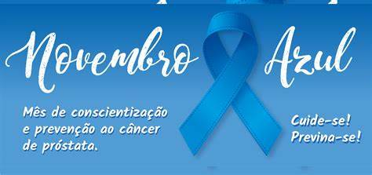

★Deixe o bigode crescer durante o mês de novembro! Se alguém perguntar, você já sabe o que dizer;
★Utilize roupas e acessórios azuis durante todo o mês para chamar a atenção para a causa;
★Pesquise sobre o câncer de próstata e se informe melhor sobre a doença;
★Ajude a desmistificar o exame de toque retal e incentive os amigos ou parentes mais velhos que nunca tomaram as medidas preventivas;
★Participe de eventos em apoio à causa;
★Se você é dono de um negócio, faça uma promoção na qual uma parcela do valor arrecadado será doado para uma instituição de pesquisa e tratamento;
★No site da Movember Foundation, você pode se informar sobre outras maneiras de se engajar!